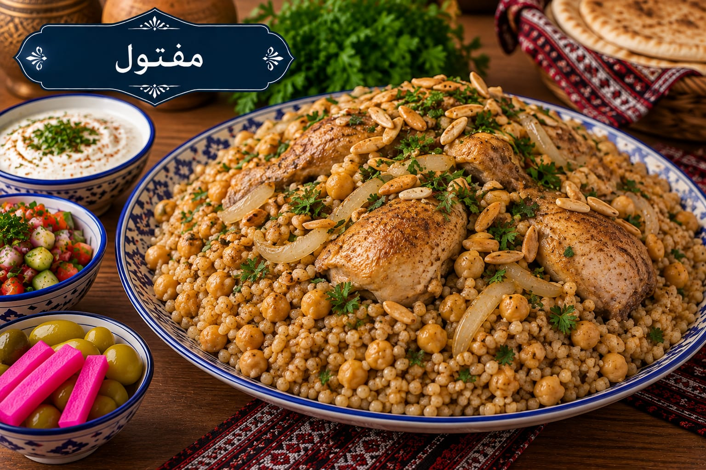

مفتول
مفتول فلسطيني بالدجاج والحمص

مقادير مفتول
- 3 أكواب مفتول
- 1 دجاجة مقطعة
- 1½ كوب حمص مسلوق
- 3 بصلات
- 2 طماطم
- 6 أكواب مرق دجاج
- 1½ ملعقة صغيرة ملح
- 1 ملعقة صغيرة كمون
- 1 ملعقة صغيرة بهار مشكل
- ½ ملعقة صغيرة فلفل أسود
- 2 ملعقة كبيرة زيت زيتون
طريقة عمل مفتول
- اسلقي الدجاج مع بصلة والبهارات حتى ينضج واحتفظي بالمرق.
- اطهي بقية البصل بزيت الزيتون حتى يلين ثم أضيفي الطماطم والحمص وجزءًا من المرق واتركيها 15 دقيقة.
- رطبي حبات المفتول بقليل من المرق وافركيها بخفة حتى لا تتكتل.
- اطهي المفتول على البخار فوق المرق أو حسب نوعه حتى تنتفخ الحبات وتنضج، مع ترطيبها بالمرق على مراحل.
- عدلي الملح وقدمي المفتول مع الدجاج والحمص ومرق البصل جانبًا.